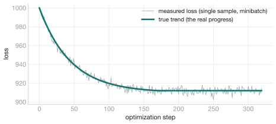
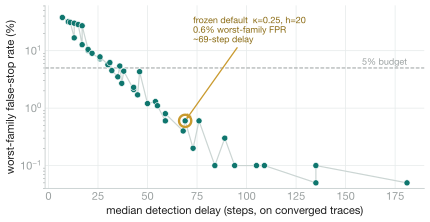

Week 6 mentioned an online convergence monitor almost in passing. It is the one piece of the streaming-VI work with the most actual statistics in it, so it deserves its own note: what problem it solves, why the obvious fixes don't work, and why the thing that does work is a tool from 1954.
The problem: a step count you can't guess
Streaming ADVI needs one number I can't give it: how many optimization steps to run. Stop too early and the approximation hasn't converged; stop too late and, on a dataset that lives on disk, every wasted step is a wasted batch read. In memory you'd just run “plenty” and not care. Out of core, over-running by 10× is real money.
The natural fix is to watch the loss and stop when it flattens. That runs straight into the nature of a streaming ELBO. Each step's loss is a single Monte-Carlo sample of a negative ELBO, evaluated on a random minibatch. Those two sources of randomness make the per-step loss bounce around by far more than the real per-step improvement, routinely 30 to 100 times larger. The signal is buried.

W steps” rule fires on the first
unlucky run of upward jumps, long before the fit has actually settled,
because it has no way to tell an unlucky patch of noise from a genuine plateau.
The reframe: convergence is a change-detection problem
The trick is to stop asking “has the loss flattened?” and start asking “has the rate of improvement collapsed, and stayed collapsed?” That second question is exactly sequential change-point detection: watch a stream and flag, as fast as possible, the moment its behaviour changes (here, from “still improving” to “only noise left”) while almost never false-alarming before that moment. The classic instrument is the one-sided CUSUM (cumulative sum), introduced by Page in 1954 for exactly this kind of “is the production line still in control?” monitoring [1].
Take the per-step improvement δt = losst-1 − losst,
standardize it by a robust noise scale into zt, and accumulate:
St = max(0, St-1 + (κ − zt)), stop when St > h
Here is how to read it. κ is an allowance: the smallest improvement rate
(in robust standard deviations) still worth waiting for. While the fit improves by more
than κ per step, z is large, κ − z
is negative, and the max(0,·) pins S at zero. Once
improvement collapses, z ≈ 0, S climbs by about
κ per step, and it takes roughly h/κ steps of
sustained evidence to cross h. A single unlucky step nudges
S a little and is immediately pushed back to zero by the next good step.
![Two stacked panels sharing an x-axis of optimization steps. Top panel: the standardized improvement z, a teal line that sits well above a dashed amber kappa line early (labelled improving fast, z much greater than kappa) then drops to hover around zero after the change point (labelled improvement collapsed, z near zero). Bottom panel: the CUSUM statistic S, flat at zero while the fit improves, then climbing steadily after the change point until it crosses a dashed threshold line h, where an amber dot marks S crosses h colon STOP. A dotted vertical line marks true convergence, and a double arrow shows the detection delay of a few dozen steps between true convergence and the stop.](images/cusum-mechanism.svg)
z starts
far above the allowance κ and collapses to noise after the fit
converges. Bottom: the CUSUM statistic S stays pinned at
zero while there is real progress, then accumulates the shortfall and crosses the
threshold h a controlled number of steps later. It fires on
sustained lack of progress, never on a single noisy step.
Why this tool and not, say, a moving-average slope test or a Keras-style patience rule?
This is not a heuristic. CUSUM is provably optimal for the job. Lorden showed it
asymptotically minimizes the worst-case expected detection delay for a given false-alarm
rate [2]; Moustakides proved the exact optimality of the CUSUM stopping rule under
that criterion [3]. It also carries O(1) state (one running sum), which is the only
kind of memory a streaming monitor can afford, and its two knobs (κ, h)
map directly onto the delay-versus-false-alarm trade-off. A windowed slope test has none
of these guarantees and drags a lag equal to its window; patience has no controllable
false-alarm rate at all.
Making it work on a noisy ELBO
Two details, both forced by the calibration study rather than guessed, are what let the textbook recursion survive a real streaming ELBO.
A trend-robust scale. Standardizing needs the noise scale
σ, but early in training the loss falls fast, so measuring the spread
of δ directly mistakes the trend for noise and inflates
σ. The fix is von Neumann's mean successive difference [4]:
estimate σ from |δt − δt-1|,
because differencing annihilates any slowly-varying trend and leaves only noise. For
i.i.d. Gaussian increments E|δt − δt-1| = 2σ/√π,
so σ = (√π/2)·E|·|, tracked online with an
exponentially-weighted mean. Winsorization. A single-sample MC ELBO has
heavy tails, so z is clipped to ±4 before it enters the
sum, so one loss spike contributes only bounded evidence.
Calibration, honestly
The defaults aren't tuned by eye. I generated 1,000 non-converged loss traces in
each of four families (linear and power-law decay, crossed with heteroscedastic and
Student-t noise) and measured the operating characteristic: the false-stop rate against
the detection delay, over a grid of (κ, h). My first cut, tuned only on
a clean linearly-decaying curve, false-stopped 86% of the heavy-tailed traces. The two
fixes above took the worst-family false-positive rate to 0.6% at the
frozen defaults κ=0.25, h=20, with a median detection delay around 70
steps.

One honest wrinkle
Reviewing my own code, I found the monitor treats a sustained upward move in the
loss as evidence to stop: z goes negative, so κ − z
grows and S climbs faster. For a fixed objective that's defensible (the fit
is diverging, stop it). But in a streaming setting the loss can rise legitimately
when the data distribution shifts at an epoch boundary, and there you'd rather keep
training and re-converge than declare victory. Whether an upward shift should drain
S instead is a design question I'm taking to my mentors; the calibration
families are all still-improving, so it doesn't touch the numbers above. I would rather
write that down than hide it.
Where it plugs in
None of this reaches into the optimizer. PyMC's pm.fit already exposes a
callback protocol (called once per step with the running losses), and the
monitor is just an implementation of it that raises StopIteration when
S crosses h. The whole thing is numpy-only and O(1) in state, so
it lifts into pymc/variational/callbacks.py as a Callback
subclass, and it completes the streaming ADVI loop by answering the one question a fixed
step count couldn't:
with model:
approx = pm.fit(100_000, callbacks=[StreamingConvergenceMonitor()])
# a large upper bound for safety; it stops on its own once the ELBO has settledReferences
- [1] Page, E. S. (1954). Continuous inspection schemes. Biometrika, 41(1/2), 100–115.
- [2] Lorden, G. (1971). Procedures for reacting to a change in distribution. Annals of Mathematical Statistics, 42(6), 1897–1908.
- [3] Moustakides, G. V. (1986). Optimal stopping times for detecting changes in distributions. Annals of Statistics, 14(4), 1379–1387.
- [4] von Neumann, J. (1941). Distribution of the ratio of the mean square successive difference to the variance. Annals of Mathematical Statistics, 12(4), 367–395.
- [5] Kucukelbir, A., Tran, D., Ranganath, R., Gelman, A., & Blei, D. M. (2017). Automatic Differentiation Variational Inference. Journal of Machine Learning Research, 18(14), 1–45.
Links. DataLoader in extras #698 · Trainer #710 · GSoC project page · Mentors @zaxtax · @fonnesbeck